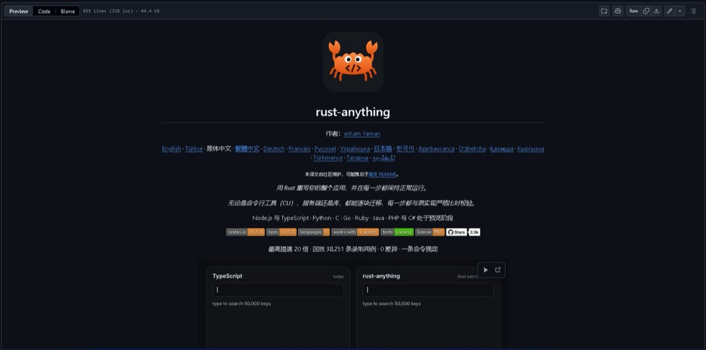
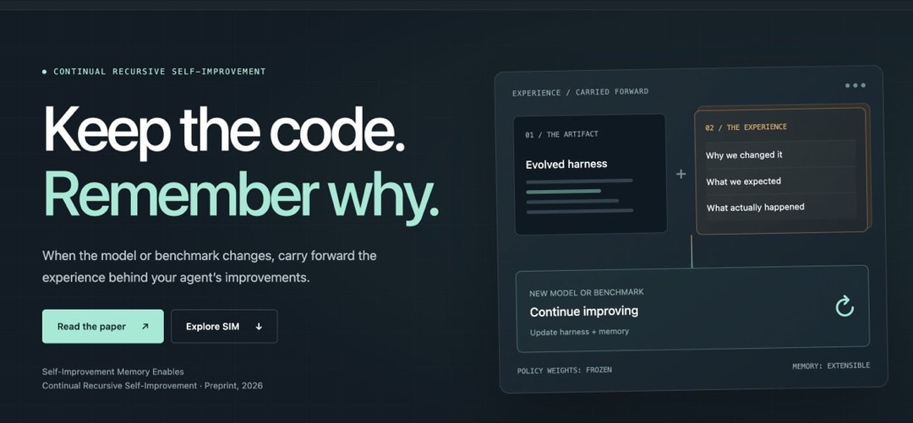
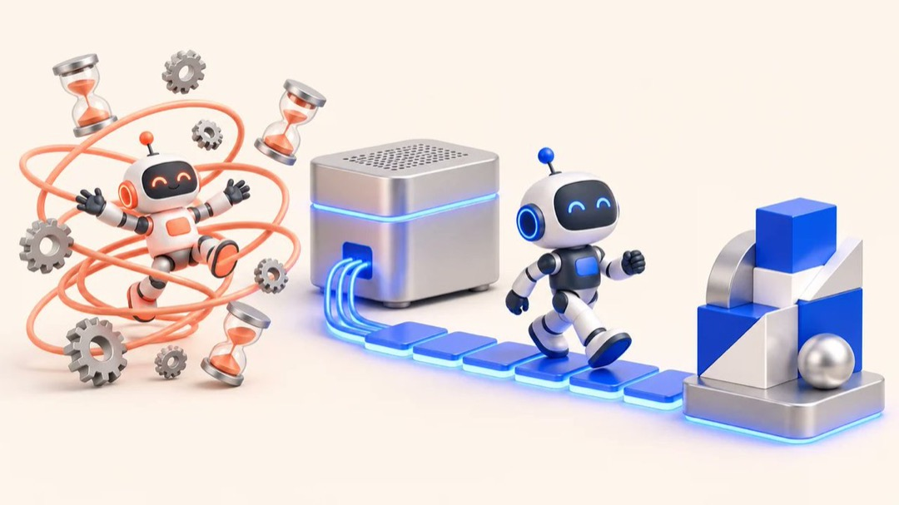

本期速览
01 Mac mini常驻运行编码Agent
02 rust-anything渐进式替换老代码
03 谷歌SIM继承Harness优化经验
04 QMD将本地笔记变为语义搜索引擎
08 64GB本地模型跑编码Agent可用
01｜Mac mini常驻运行编码Agent
来源（X） · @blankwebdev · 2026-11-19 15:46
1. 以前：所有开发环境都在 MacBook Pro 上。出门得背着电脑；agent 跑长任务时，电脑不能合盖、不能断网；开车路上电脑一收进包，任务就停了。
2. 现在：把所有项目和开发环境搬到家里一台 24 小时开机的 Mac mini 上，Codex、Claude Code 这些 agent 都在它上面跑。MacBook 和手机装 T3 Code，通过 T3 Connect 连回 mini 派任务、看进度、审 diff，体验和本地一样。少数要图形界面的操作，用 UU 远程兜底。
3. 几个痛点就这么没了：
· 出门不用带电脑，手机就够
· 任务在 mini 上跑，合盖、断网、开车都不影响
· 有空时手机上看一眼进度，顺手派下一个任务
· 开发环境只有一套，换设备不用重新配
02｜rust-anything渐进式替换老代码
来源（X） · @HeLi8866 · 2026-11-19 21:03
GitHub 上刚开源了一个逆天级渐进式重构神作 rust-anything。
它无需推倒重来，而是像寄生一样，在你业务正常运行的同时，一块块把老代码替换成 Rust：
→ 业务一秒都不用停：先给老系统套个“Rust 门脸”，重构好的走 Rust，没重构好的自动回退老代码
→ 像素级打桩对撞：新老代码强制比对输入输出，连极端浮点数和 Emoji 都要求 100% 对齐，随时一键回滚
→ 专砍最慢的瓶颈：官方实测，单点替换后 Node.js 搜索直接提速 20 倍，Python 提速 17 倍
→ 6 大主流语言通吃：Python、JS、TS、Go、Java、Ruby 全包圆，还能直接喊 Claude Code 接管迁移
零停机、零上线风险，白嫖几十倍的性能暴涨。
被解释型语言性能卡脖子的兄弟，这套重构神器建议直接存死！
你手头最想换成 Rust 提速的祖传代码是用什么语言写的？
仓库地址：
https://github.com/erkamyaman/rust-anything

03｜谷歌SIM继承Harness优化经验
来源（X） · @aigclink · 2026-11-19 17:39
自我改进记忆，Self-Improvement Memory（SIM），为 Harness优化器增加一套结构化记忆
Coding Agent的能力不仅取决于底层模型，还取决于 Harness，现已有让AI自动优化Harness的方法，但有一个问题，比如一套专门针对Claude优化的Harness换成其他模型后，原来有效的修改可能失效，甚至性能下降
SIM就是让换模型、换任务后，Harness无需从头优化，过去的改进经验可以继承、并且继续演化
效果上，从Claude Opus 5.5切换到Gemini 3.8 Flash，完整SIM在四个测试领域均优于只继承Harness，最高领先11.33分
SIM会围绕Harness的问题保存：
发现了什么问题，为什么需要修改
改了哪些组件，预期解决什么问题
实际效果如何，有没有产生性能退化
在什么模型、任务和测试条件下有效
当模型或任务变化时，优化器可以利用这些历史记录决定哪些修改应该保留、调整、替换或者删除
重要的是，这套记忆会随着后续优化持续更新，新一轮的修改和测试结果又会成为下一轮优化的依据
他们把这种跨模型、跨任务继续优化Harness的过程称为 CRSI
当然，目前实验仍要求Harness接口兼容，部分设定只有单次优化实验，不能认为它已经实现了无限制的自主进化
#SelfImprovementMemory #RSI #AgentMemory

04｜QMD将本地笔记变为语义搜索引擎
来源（X） · @Ryrenz · 2026-11-19 23:40
QMD 在 GitHub 上 3.1 万 star，上过 GitHub Trending，作者是 GitHub 主页写着 Shopify 的 Tobias Lütke，昨天刚发了 2.9.0。
以前想找半年前的一份会议记录，记得大概聊过什么，可当时用的是另一个说法，关键词怎么搜都搜不到，只能一个个文件夹去翻。
QMD 把三种搜法叠在一起：关键词全文检索、按意思找的向量检索，最后再让一个小模型给结果重新排序。三个 GGUF 小模型第一次用时自动下载，之后全在本机跑。
它还自带 MCP 服务器，Claude Code 这类 agent 可以直接调它查你的知识库，不用你再复制粘贴。围着它已经长出了周边：pi 的记忆扩展、搭 Obsidian + Claude Code 第二大脑的脚手架，都拿 QMD 做语义搜索。
笔记越记越多的人，终于不用靠记性找笔记了。
GitHub：https://github.com/tobi/qmd
05｜Deep-Live-Cam单图实时换脸
来源（X） · @MinLiBuilds · 2026-11-19 22:42
10 万 Star，Deep-Live-Cam。
😂 乔碧萝当年有这套技术，宅男都要死于她的胸前。
除了脸是别人的，身体、衣服、声音、动作全都是你自己的。
你转头、眨眼、张嘴，AI 换过的脸也会跟着动。
不需要训练模型，只要一张照片，就能在本地 GPU 上实时换脸，接 OBS 直播。
仓库👇
https://github.com/hacksider/Deep-Live-Cam
引用内容
Lonely @Lonely__MH
1. 照着教程跑通一个24小时数字人
2. 实现三个刚需功能：自动读弹幕、自动舔大哥、24小时不断播
3. 再搞几个神仙颜值，解决留存问题
4. 直接去小红书卖方案，懒得卖就自己开个号24小时挂机当主播
真的有手就行，看懂的已经去搞了 https://x.com/i/article/2122998221798522880
06｜8个设计Skill改善AI生成UI
来源（X） · @wuyi_ai · 2026-11-19 15:20
🔖赶紧收藏! ( 前 3 个必装)
1. ui-ux-pro-max（90.4k星）🏆
—设计类的绝对一哥，配色、字体、布局、动效、多技术栈规则全在里面，装它等于给AI塞了一本设计学院教材。
2. taste-skill（41.4k星）🏆
—专治AI味，提升品味判断，让它知道什么该删。
3. huashu-design（24.2k星）🏆
—设计哲学到高保真到视觉QA一条龙，流程最完整。
4. MengTo Skills（6.1k星）
—设计师出品，重参考、重判断；
5. scroll-world（4.6k星）
—做高端3D滚动Landing Page的神器；
6. emilkowalski/skills（2.6k星）
—动画细节大师，界面手感就靠它。
7. awesome-design-skills（1.3k星）
一份索引全搞定。
8. Frontend Design Skill
Anthropic官方的, 强制AI先定字体、配色、版式再写代码。
07｜Linger开源本地个人Agent
来源（X） · @xiaomovps · 2026-11-19 22:03
这个项目叫 Linger，它的作者选择了 Pi Agent 作为本地模型的运行底座，而且还同时支持 Claude Code、Codex 等 Harness对接
但是他最大的区别，它不只是一个聊天机器人，而是往Personal Agent方向打造的，最主要还开源了出来
我自己总结几个能力：
1、长期记忆，可以整理邮件、聊天记录和工作习惯，建立自己的个人知识库
2、Computer Use，支持操作电脑桌面和浏览器，完成各种自动化任务
3、多 Agent 协作，可以根据任务安排不同 Agent 分工执行
4、本地部署，支持运行本地模型，个人数据和工作流也能自己掌控
最有意思的地方还是它是围绕Pi 去构建的，Pi 虽然精简但是开发者还是可以围绕它搭建出完整的 Personal Agent
不过这里需要提醒一句，项目目前还在早期阶段，稳定性和实际执行效果需要进一步验证
GitHub：https://github.com/simplexai-labs/linger
引用内容
Tony Zhang @zhangboknight
中文译文
20世纪60年代，计算是集中式的，直到PC把算力交到了每个人手中。如今，AI在数据中心中训练，然后按token一个一个租还给你。
今天我们开源了 Linger (@HeyLingerAl)，一个运行在你自己电脑上的个人智能体。
我们相信智能应当是分布式的。你的上下文、你的数据，以及驱动它们的智能，应当完全归你所有。
Github: https://github.com/simplexai-labs/linger 主页: http://heylinger.com
原文
In the 1960s, computing was centralized until the PC put power into everyone's hands. Now Al is trained in datacenters and rented back to you token by token.
Today we open source Linger (@HeyLingerAl), your personal agent living on your own computer.
We believe intelligence should be distributed. Your context, your data, and the intelligence that powers them should be owned entirely by you.
Github: https://github.com/simplexai-labs/linger Homepage: http://heylinger.com

08｜64GB本地模型跑编码Agent可用
来源（X） · @jolestar · 2026-11-19 17:02
64GB 本地桌面跑编码 Agent 已经跨过可用线（主力稳选 qwen3.8:27b-gguf，日常快改选 gemma4:26b），模型收尾能力与上下文空间还有点差距。
等再迭代一波，感觉明年就可以主力本地模型了。
引用内容
Holon @holonrun
中文译文
一个64GB的本地LLM能应对真正的多轮编码智能体任务吗？
一旦第1轮就携带了约30k token的工具契约，单轮速度和基准测试就不再能预测通过率了。
我们在M5 Pro上测试了Qwen3.8、Gemma 4、Qwen3-Coder、GGUF vs MLX，以及Ollama调优：(1/6)
原文
Can a 64GB local LLM handle real multi-turn coding agent work?
Once turn 1 carries a ~30k-token tool contract, single-turn speed and benchmarks stop predicting pass rates.
We tested Qwen3.8, Gemma 4, Qwen3-Coder, GGUF vs MLX, and Ollama tuning on an M5 Pro: (1/6)
